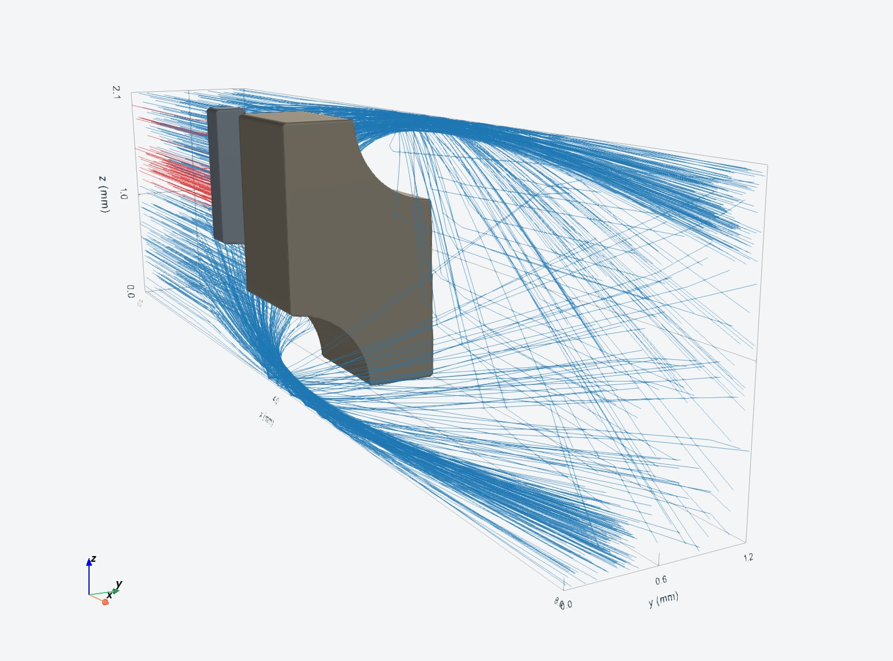
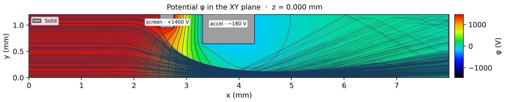
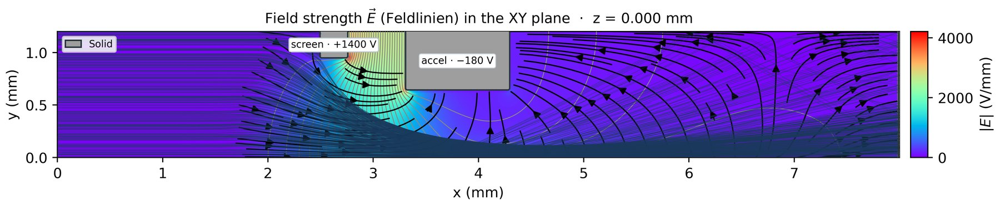
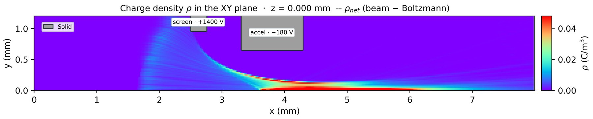
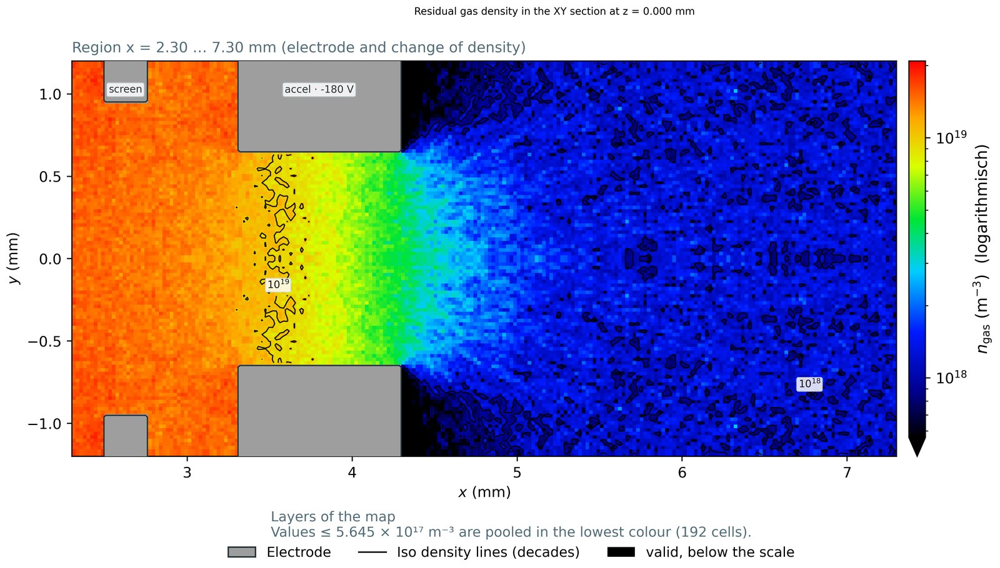
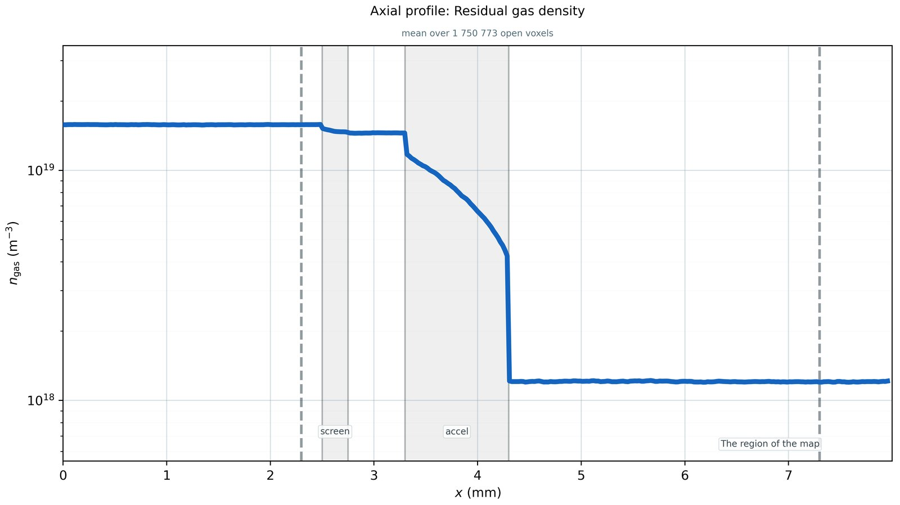
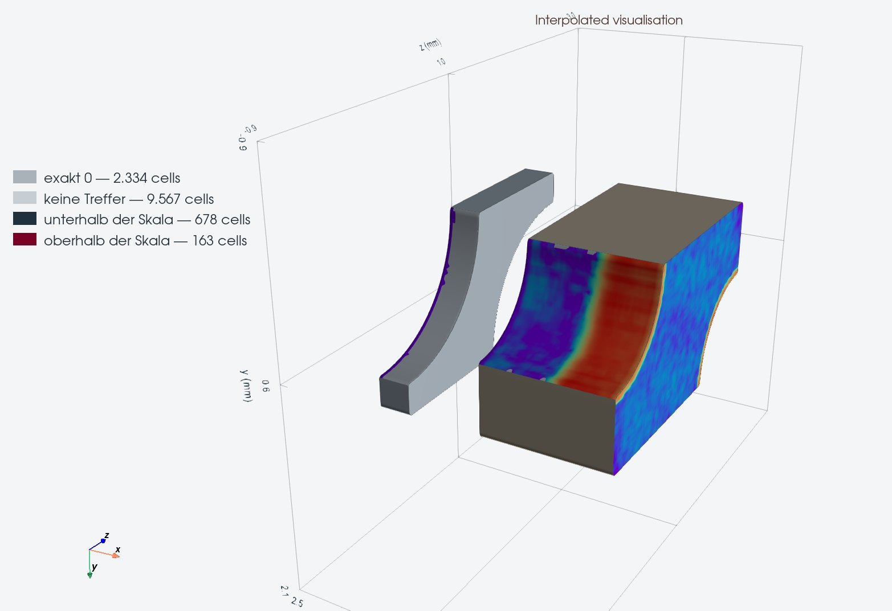
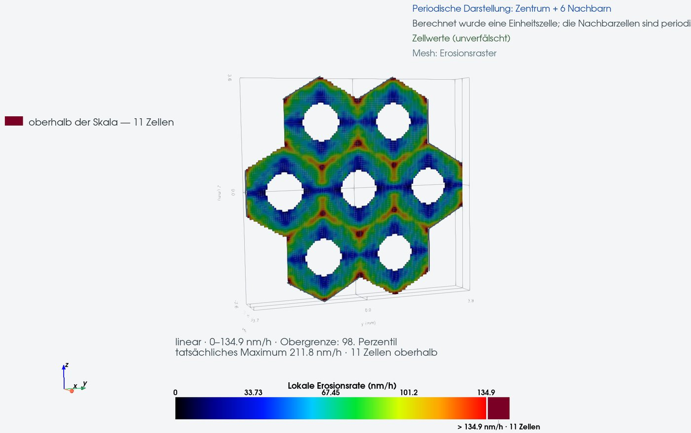

Wozu IONTRACE?
Die Extraktionsoptik bestimmt maßgeblich den Strahlstrom, die Strahlform und die Lebensdauer der Gitter. Diese Größen sind eng miteinander gekoppelt: Die Raumladung beeinflusst das elektrische Feld und damit die Ionenbahnen. Durch Ladungsaustauschstöße zwischen Strahlionen und dem Neutralgas entstehen langsame Ionen, die vom elektrischen Feld zu den Gittern beschleunigt werden und dort Erosion verursachen können. Die fortschreitende Veränderung der Gittergeometrie wirkt sich wiederum auf das elektrische Feld und den extrahierten Ionenstrahl aus.
IONTRACE bildet diese Wechselwirkungen in einer gekoppelten dreidimensionalen Simulation ab. Die Gittergeometrie kann über aufeinanderfolgende Betriebsintervalle fortgeschrieben werden, sodass die Auswirkungen der Erosion auf Feld, Teilchenbahnen und Neutralgasverteilung berücksichtigt werden können.

Physikalische Modelle und Funktionen
Der Funktionsumfang ist modular aufgebaut. Je nach Aufgabenstellung können die folgenden Modelle und Auswertungen miteinander kombiniert werden.
- Zwei- und dreidimensionale Rechnung – dieselbe Software rechnet wahlweise vollständig dreidimensional oder translationssymmetrisch in zwei Dimensionen. Der 2D-Modus nutzt dieselbe Oberfläche und dieselben Auswertungen, löst große Gitter jedoch deutlich schneller und eignet sich damit für Voruntersuchungen und für translationssymmetrische Anordnungen wie den Zylinderanalysator.
- Plasma und Ionenemission – Modelle für die selbstkonsistente Plasmaextraktion mit Boltzmann-Elektronen sowie für vorgegebene Emitterflächen und Anfangsverteilungen.
- Elektrische Feldberechnung – Lösung der Poisson- beziehungsweise Poisson-Boltzmann-Gleichung unter Berücksichtigung der Raumladung. Für die entstehenden linearen Gleichungssysteme stehen Mehrgitter-, SOR- und direkte Lösungsverfahren zur Verfügung.
- Gekoppelte Teilchenrechnung – Ionenbahnen und Raumladungsdichte werden iterativ mit dem elektrischen Feld gekoppelt.
- Zeitabhängige Potentiale – zeitlich veränderliche Elektrodenspannungen ermöglichen die Untersuchung dynamischer Ionenoptiken, beispielsweise von Time-of-Flight-Anordnungen.
- Gekrümmte Elektrodenoberflächen – wahlweise klassische Treppendarstellung oder Teilzellenkorrektur nach Shortley–Weller zur genaueren Abbildung gekrümmter Grenzflächen.
- Symmetrien und mehrere Aperturen – Spiegelrandbedingungen ermöglichen reduzierte Rechengebiete. Auch Geometrien mit mehreren Aperturen können in einem gemeinsamen Rechengebiet untersucht werden.
- Geometrieerstellung – parametrischer Aufbau aus geometrischen Grundkörpern – darunter Zylindersegment, Halbzylinder und gekrümmte Elektroden –, die frei im Raum positioniert und um beliebige Winkel gedreht werden können, sowie ein lesbares, textbasiertes und versionierbares Dateiformat.
- Neutralgas – Testteilchen-Monte-Carlo-Simulation der räumlichen Neutralgasverteilung innerhalb der Elektrodengeometrie.
- Ladungsaustausch – Erzeugung und Verfolgung von Ladungsaustauschionen auf Grundlage der lokalen Neutralgasdichte, des Ionenstrahls und der entsprechenden Wirkungsquerschnitte. Entstehungsorte und Elektrodenauftreffpunkte können räumlich ausgewertet werden.
- Erosion und Lebensdauer – Berechnung des material-, energie- und winkelabhängigen Elektrodenabtrags. Die fortschreitend veränderte Geometrie kann in die anschließende Feld-, Teilchen- und Neutralgasrechnung übernommen werden.
- Visualisierung und Auswertung – integrierte 3D-Darstellung, Konvergenz- und Fortschrittsanzeige sowie Export von Simulations- und Auswertungsdaten.
Felder und Bahnen
Alle Darstellungen stammen aus demselben Simulationslauf einer Zweigitteroptik mit einem Screen-Gitter auf +1.500 V und einem Beschleunigungsgitter auf −150 V.



Neutralgas und Ladungsaustausch
Wo Ladungsaustauschionen entstehen, hängt vom räumlichen Zusammentreffen des Ionenstrahls mit dem Neutralgas ab. Das elektrische Feld bestimmt anschließend ihre Bahnen und Auftreffenergien. Daraus ergibt sich zusammen mit den Materialeigenschaften die räumliche Verteilung des Elektrodenabtrags.


Erosion und Lebensdauer
Aus der räumlichen Auftreffrate der Ionen, ihren Energien und Einfallswinkeln sowie der materialabhängigen Sputterausbeute wird die lokale Abtragsrate berechnet. Durch die zeitliche Fortschreibung der Gittergeometrie lässt sich deren Entwicklung über die Betriebsdauer untersuchen und die Lebensdauer abschätzen.


Verifikation und Vergleich
Die einzelnen Rechenmodelle werden anhand analytischer Referenzfälle, Netzkonvergenzstudien und Vergleichen mit unabhängigen Simulationsprogrammen geprüft.
- Analytische Verifikation – Vergleich des elektrostatischen Feldlösers mit der exakten Lösung für einen Plattenkondensator.
- Netzkonvergenz – Untersuchung der Lösung auf zunehmend feineren Rechengittern und Vergleich der klassischen Treppendarstellung mit der Teilzellenbehandlung nach Shortley–Weller.
- Vergleich mit KOBRA – Gegenüberstellung ausgewählter Feld-, Strahl- und Stromgrößen für einen gemeinsamen Referenzfall. Verbleibende Unterschiede werden unter Berücksichtigung der jeweiligen Plasma- und Emissionsmodelle bewertet.
- Prüfung der Erosionsrechnung – definierte Testfälle für die Verarbeitung von Ionenauftreffern, die Berechnung des Materialabtrags und die schrittweise Aktualisierung der Geometrie.
- Verifikation der Neutralgasrechnung – Vergleich der berechneten Transmission durch eine zylindrische Apertur mit dem entsprechenden Clausing-Faktor im molekularen Strömungsbereich.
Download
IONTRACE wird als Installationsprogramm für Windows bereitgestellt. Die Installation erfolgt ausschließlich für das aktuelle Benutzerkonto, benötigt keine Administratorrechte und verändert keine systemweiten Einstellungen.
- Version
- 1.2.1
- Bereitgestellt
- 28.08.2026
- Betriebssystem
- Windows 10/11, 64 Bit
- Datei
- IONTRACE-Setup-1.2.1.exe
- Größe
- 184 MB
- SHA-256
- 7661e023007129452b9e6523314d04c648e6c49ab5612a9f610b1ab2774dae84
- Entwicklung
- Dr. Kristof Holste, Justus-Liebig-Universität Gießen
Vorherige Version
Version 1.1.1 bleibt herunterladbar, falls mit der neuen Fassung in einer bestehenden Arbeitsumgebung etwas nicht wie erwartet funktioniert. Setups und Ergebnisse aus 1.1.1 lassen sich in 1.2.1 weiterhin öffnen.
- Version
- 1.1.1
- Bereitgestellt
- 18.08.2026, 13:17 Uhr (MESZ)
- Datei
- IONTRACE-Setup-1.1.1.exe
- Größe
- 181 MB
- SHA-256
- 796df396ddbac12bc14ad9d6569381d55b87fc89378c15ed68fded4cdcff1657
Neuerungen in Version 1.2.1
Der Rechenkern der dreidimensionalen Simulation ist unverändert geblieben; bestehende Setups und Ergebnisse aus 1.1.1 lassen sich weiterhin öffnen. Die HPC-Anbindung ist wie bisher nicht Teil des Installationspakets.
- Zweidimensionaler Rechenmodus. IONTRACE rechnet jetzt wahlweise dreidimensional oder translationssymmetrisch in zwei Dimensionen. Der 2D-Modus ist keine zweite Software, sondern eine Rechenart innerhalb desselben Programms: gleiche Oberfläche, gleicher Öffnen-Dialog, gleiche Reiter. Große Gitter lösen deutlich schneller, die Rechnung lässt sich während des Laufs abbrechen, und das Rechengitter kann eingeblendet werden. Als vollständiges Anwendungsbeispiel liegt ein 2D-Modell des 127-Grad-Zylinderanalysators bei.
- Restgas aus den Betriebsdaten der Quelle. Der Neutralgaszustand wird aus Strom, Zufuhr und Wirkungsgrad bestimmt statt aus einer freihändig gesetzten Dichte. Die Betriebsrechnung führt über drei Arbeitsseiten mit Bereitschaftsprüfung, Skizze der echten Geometrie und Genauigkeitsangabe. Die Karte zeigt die örtliche Dichte aus den Geschwindigkeitsmomenten statt eines Mittelwerts.
- Frei drehbare Körper in der Geometrie. Körper lassen sich frei im Raum positionieren und um beliebige Winkel drehen; die Körperform bleibt dabei längentreu. Neu sind Zylindersegment, Halbzylinder und gekrümmte Elektroden. Zusammengesetzte Körper dürfen ein eigenes Potential bekommen, und die Schnittebene lässt sich um 90 Grad drehen.
- Genauere Erosions- und Lebensdauerrechnung. Der Aperturradius wird aus der offenen Fläche bestimmt statt aus einer Schwelle; das beseitigt einen systematischen Versatz von knapp drei Mikrometern. Neben dem Ringmittel steht jetzt der Abtrag am tiefsten Punkt – das Ringmittel allein verdünnt lokale Grubenbildung erheblich. Die Abtragsfläche wird zwischen Ausgangs- und Endkontur dargestellt, und der Erosionsverlauf lässt sich als Video schreiben.
- Parameterstudien und Flugzeitpfad. Auch eine freie Spannung ohne hinterlegte Formel kann als Studiengröße durchgefahren werden; einzelne Parameterpunkte lassen sich gezielt ansehen, und fehlgeschlagene Varianten nennen einen benannten Grund statt einer Nummer. Die Reiter des Flugzeitpfades hängen wieder am Flugzeitergebnis, und die Linien des Flugzeitspektrums stehen zusätzlich in einer Tabelle.
- Überarbeiteter Bildexport. Titel, Legende und Farbskala lassen sich im Exportbild mit der Maus setzen. Maßstäblich gezeichnete Feldbilder stehen mittig statt am rechten Rand, Feldlinien und Pfeile richten sich nach der gewählten Farbpalette, und die Leinwand wird nicht mehr aufgebläht.
- Durchgehende Diagnose. Kein Programmende bleibt ohne Diagnoseeintrag: Jede Sitzung schreibt einen eigenen Ordner mit Herzschlag und Abschlussmeldung. Ein externer Aufpasser erkennt hängende Sitzungen, startet aber von sich aus nichts neu und beendet nichts. Eine Belastungsprüfung mit 472 Einzelprüfungen wurde bestanden.
Neuerungen in Version 1.1.1
- Neuer Exportdialog für alle Abbildungen. Jede Grafik wird über denselben Dialog gespeichert: links eine Vorschau dessen, was tatsächlich in die Datei geschrieben wird, rechts die Einstellungen. Größe und Schrift werden in Zentimetern und typografischen Punkten festgelegt und hängen damit nicht mehr von Fenstergröße, Bildschirmauflösung oder Anzeigeskalierung ab. Die eingetragenen Maße sind verbindlich: 16 × 11 cm ergeben eine Datei mit 16 × 11 cm.
- Fehlerhafte SVG- und EPS-Dateien behoben. In SVG bleiben die Beschriftungen jetzt wählbarer Text statt reiner Umrisse; EPS erhält den vorgeschriebenen Dateiabschluss und eine geprüfte Bounding Box. Transparenz, die EPS nicht darstellen kann, wird wahlweise gegen den Hintergrund verrechnet oder gerastert — statt stillschweigend deckend gezeichnet zu werden. Überlange Achsenbeschriftungen werden in keinem Format mehr abgeschnitten.
- Exportprofile und Standardwerte. Einstellungen werden je Dateiformat gemerkt; eigene Profile lassen sich anlegen, umbenennen, ein- und ausgeben sowie als Standard für ein Format oder eine Diagrammart festlegen. Mitgeliefert sind Profile für einspaltige und zweispaltige Veröffentlichungen sowie für Präsentationen.
- Auswählbare Bildinhalte. Titel, Legende, Elektroden- und Potentialbeschriftungen sowie Hinweistexte lassen sich für den Export einzeln ein- und ausblenden, ohne die Darstellung im Programm zu verändern.
- Überarbeiteter Ergebnisbereich der Parameterstudien. Der Platz gehört jetzt dem Diagramm: eine schmale Werkzeugspalte mit den Umschaltern Kurven, Darstellung und Analyse, eine zweizeilige Kopfzeile mit Studienauswahl und Zustand, lesbare Kurvennamen und ein Exportmenü.
- Fortschrittsmonitor für Parameterstudien. Während eines Laufs entsteht die Kennlinie live: Elektrodenströme über dem variierten Parameter, dazu eine Variantentabelle mit Status, Rechenzeit und Fehlermeldungen sowie eine Restzeitschätzung.
- Abgeschnittene Beschriftungen in den Seitenleisten behoben; ihre Breite richtet sich jetzt nach dem Inhalt und wächst mit der Schriftgröße und der Windows-Anzeigeskalierung mit.
Neuerungen in Version 1.1.0
- Deutlich beschleunigte Feldberechnung durch einen parallelisierten AMG-Löser.
- Optimierte Speicherverwaltung und schnellere Verarbeitung der Teilchenbahnen.
- Verbesserte Laufzeitdiagnostik und zahlreiche Stabilitäts- und Detailverbesserungen.
Nutzung und Lizenz. IONTRACE darf von Hochschulen und öffentlich getragenen Forschungseinrichtungen unentgeltlich für nichtkommerzielle wissenschaftliche Zwecke verwendet werden. Jede kommerzielle Nutzung erfordert die vorherige schriftliche Genehmigung des Autors. Maßgeblich sind die dem Installationspaket beigefügten Lizenzbedingungen.
Installationspasswort erforderlich. Die Installationsdatei kann frei heruntergeladen werden; für die Installation wird jedoch ein Passwort benötigt. Dieses erhalten Sie auf Anfrage per E-Mail an Kristof.Holste@physik.jlug.de. Bitte nennen Sie dabei kurz Ihre Institution und den vorgesehenen Einsatz von IONTRACE.
Hinweis zur Windows-Installation. Das Installationsprogramm ist derzeit nicht digital signiert. Windows kann deshalb beim Start eine Warnung über eine unbekannte oder nicht erkannte Anwendung anzeigen. Über „Weitere Informationen“ und anschließend „Trotzdem ausführen“ kann die Installation fortgesetzt werden.